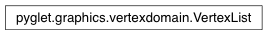

VertexList Class¶
-
class
VertexList(domain, start, count)¶ A list of vertices within a VertexDomain. Use VertexDomain.create to construct this list.
Attributes:
colorsArray of color data. edge_flagsArray of edge flag data. fog_coordsArray of fog coordinate data. multi_tex_coordsMulti-array texture coordinate data. normalsArray of normal vector data. secondary_colorsArray of secondary color data. tex_coordsArray of texture coordinate data. verticesArray of vertex coordinate data.
Attributes¶
-
VertexList.colors¶ Array of color data.
-
VertexList.edge_flags¶ Array of edge flag data.
-
VertexList.fog_coords¶ Array of fog coordinate data.
-
VertexList.multi_tex_coords¶ Multi-array texture coordinate data.
-
VertexList.normals¶ Array of normal vector data.
-
VertexList.secondary_colors¶ Array of secondary color data.
-
VertexList.tex_coords¶ Array of texture coordinate data.
-
VertexList.vertices¶ Array of vertex coordinate data.